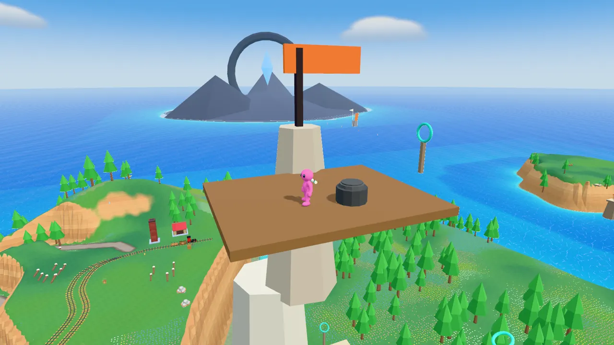
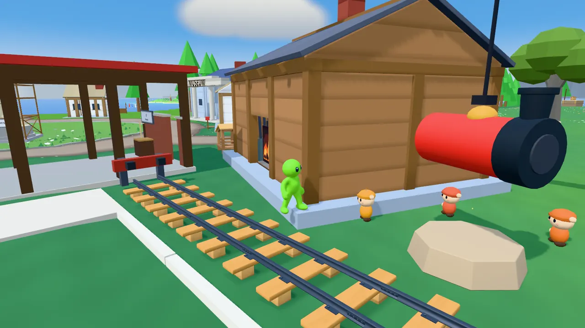
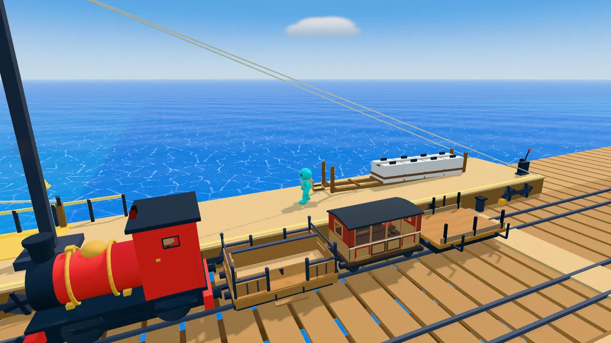
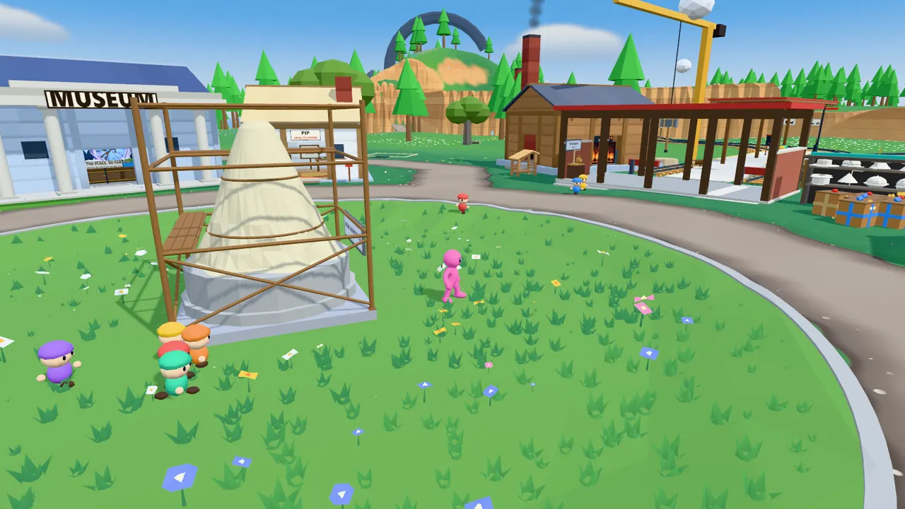

One island to start
From the top of Needle Bell you can see all of it: the town, the timber camp, the quarry and every stretch of line laid so far. The glider is the quick way back down.

Chop, carry, lay track
Each stretch of track has a bill of logs and stone. Fill it and the line moves on. Haul the boiler home and the old engine wakes: from then on the trains carry the timber for you.

Then out over the water
Past the pier there is no ground left. Set footings one frame at a time and the trestle walks out to sea, toward Ring Island.

Ride what you built
Every stretch you finish becomes part of the ride. Step on at the town and step off at the end of the line, where the next job is waiting.

A town that grows with the line
Freight and fares land in the town’s strongbox. It is one wallet for everyone, and it buys plots and houses that send more riders to the trains.

Better engines
Steel comes home from Ring Island by rail. Spend it at the roundhouse and the engine goes round on the turntable with a new boiler.
Good to know
- One to four players. It works alone; friends join the same world from a link.
- The world is shared and saved. What one of you builds, everyone rides.
- Keyboard and mouse, touch or a gamepad.
- Still being built. Changes land most days, and a big update can reset the world. Watch the patch videos.